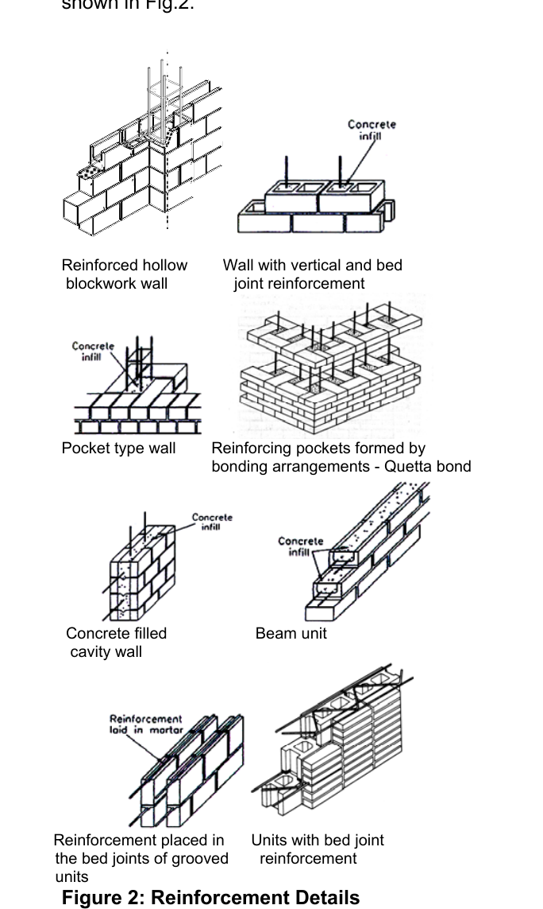
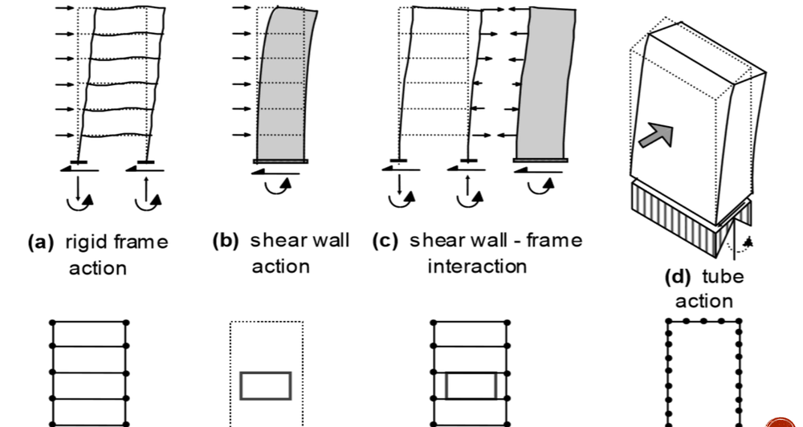
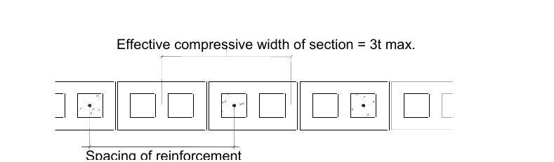
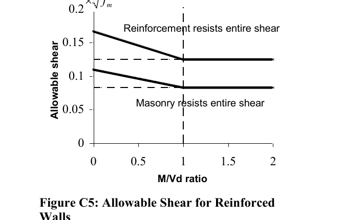
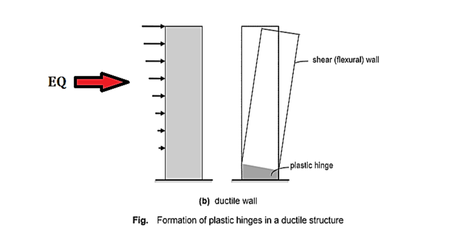
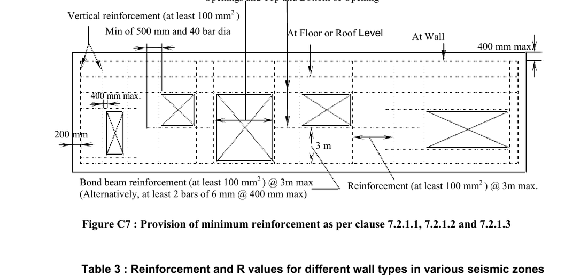
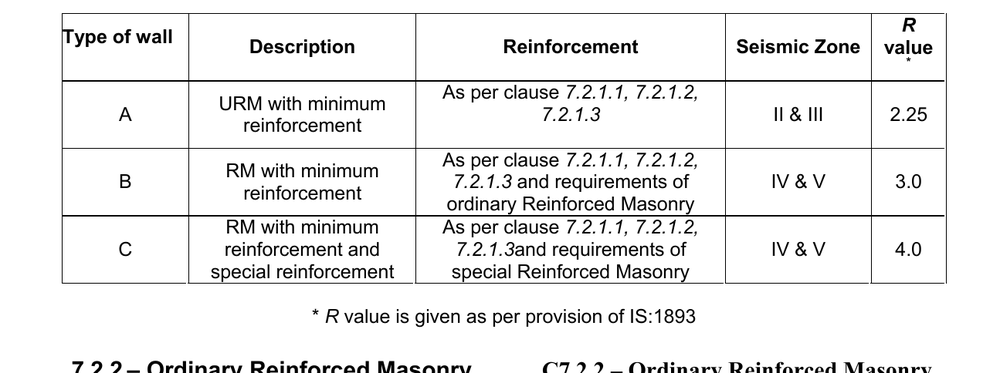

Syllabus & Marks Distribution
| Detail | Information |
|---|---|
| Course | Seismic Resistant Design of Masonry Structures — ENCE 367 (Elective I) |
| Chapter | 5 — Reinforced Masonry |
| Teaching Hours | 5 hours |
| Marks Allocation | 6 marks in the 60-mark final |
| Total Course Marks | 60 marks (final exam) · 45 teaching hours |
| Weight | 10% of the final paper |
| Codes required | IITK-GSDMA Guidelines for Structural Use of Reinforced Masonry, IS 1905–1987, IS 4326, NBC 202 |
Syllabus Topics
- 5.1 Basic concept
- 5.2 Vertical and horizontal one-way flexural behaviour
- 5.3 Two-way flexural behaviour
- 5.4 Flexural and shear strength
- 5.5 Reinforced masonry column, beam, and bands
Importance & Frequently Asked Topics HIGH
On paper this chapter is only 6 of 60 marks, and the theory part is indeed small — “Explain reinforced masonry” for 4 marks has appeared repeatedly and is almost guaranteed. But the chapter is much more valuable than 6 marks suggests, because the reinforced brick lintel and the seismic band are reinforced-masonry elements, and those have carried 12–18 mark numericals in three of the last six papers. Across the last six papers this chapter accounts for 5 questions and about 50 marks in the 80-mark format.
Marks Distribution by Each Exam
| Exam | Marks | Questions asked |
|---|---|---|
| 2075 Chaitra | 18 | Q5 — design a reinforced brick masonry lintel over a 1.5 m window opening |
| 2076 Chaitra | 24 | Q1b — design a lintel band [12]; Q2b — reinforced brick masonry lintel under triangular loading [12] |
| 2078 Bhadra | — | Not asked directly |
| 2079 Bhadra | 4 | Q5a — what is reinforced masonry? Explain |
| 2080 Bhadra | 6 | Q4b — load on the horizontal band at lintel level (band design) |
| 2081 Bhadra | 4 | Q5a — explain reinforced masonry |
Most Frequently Asked Topics
| Topic | Times asked | Frequency |
|---|---|---|
| Definition and explanation of reinforced masonry (§5.1) | 3 | |
| Reinforced brick masonry lintel design (§5.5.3) | 2 | |
| Seismic band — design and detailing (§5.5.4) | 2 | |
| Flexural and shear strength provisions (§5.4) | 1 | |
| Reinforced masonry columns and lateral ties (§5.5.2) | 1 |
Topic-wise Importance
| Section | Topic | Importance |
|---|---|---|
| 5.1 | Basic concept, forms of reinforced masonry, permissible stresses | Very High |
| 5.2 | One-way flexural behaviour, vertical vs horizontal span | Medium |
| 5.3 | Two-way flexural behaviour, yield-line coefficients | Medium |
| 5.4 | Flexural and shear strength, failure mechanisms | High |
| 5.5 | Columns, beams (lintels) and bands | Very High |
5.1 Basic Concept
- Explain reinforced masonry. 2081 Bhadra · Q5a [4 marks]
- What is reinforced masonry? Explain. 2079 Bhadra · Q5a [4 marks]
5.1.1 Definition
The contrast with unreinforced masonry must be stated carefully, because it is the point of the definition:
| Basis | Unreinforced masonry (URM) | Reinforced masonry (RM) |
|---|---|---|
| Design assumption about tension | The flexural tensile stress is resisted by the masonry, within a small permissible value (0.07 / 0.14 N/mm²) | The masonry is assumed to carry no tension at all; all tension goes to the steel |
| Reinforcement | May actually be present, but is neglected in the calculation | Provided by design and fully accounted for |
| State of the section | Designed to remain uncracked; linear elastic throughout | The tension zone is allowed to crack; a cracked transformed section is used |
| Governing check | Keep fcb − fca below the permissible tension | Provide Ast to carry the whole tensile force T = M/(jd) |
| Ductility | Brittle — fails suddenly once it cracks | Ductile — the steel yields first and absorbs energy |
| Slenderness limit for a column | 15 | Higher, because buckling is restrained by the steel |
5.1.2 Why masonry is reinforced
- Masonry is strong in compression but almost useless in tension. Its flexural tensile strength is only 0.1–0.4 N/mm² and the permissible value is 0.07–0.14 N/mm² — roughly a hundredth of its compressive strength, and effectively zero in mud or weak lime mortar.
- Earthquake and wind produce reversible tension in walls, both in-plane (at the heel of a shear wall) and out-of-plane (at mid-height of a wall spanning between floor and roof). Unreinforced masonry has no answer to this except mass and precompression.
- Unreinforced masonry fails in a brittle manner once flexural or shear cracking starts, with very little warning and almost no energy dissipation — the very worst property in an earthquake.
- The scope of URM is limited. It cannot economically produce tall walls, large openings, slender piers, retaining walls or tanks. Reinforcement removes those limits.
- Reinforcement supplies ductility, which is what modern seismic codes actually reward: the response reduction factor R rises from about 1.5–2.25 for URM to 3.0–4.0 for reinforced masonry (see §5.5.6), which directly reduces the design earthquake force.
5.1.3 Forms of reinforced masonry — where the steel goes

| Form | How it is built | Typical use |
|---|---|---|
| Reinforced hollow blockwork | Vertical bars threaded through the aligned hollow cores of concrete blocks; the cores are then grouted | The standard modern system for reinforced masonry shear walls |
| Wall with vertical and bed-joint reinforcement | Vertical bars in grouted cavities plus ladder/truss mesh laid in the horizontal mortar beds | Walls needing resistance in both directions |
| Pocket type wall | Bars placed in deep pockets formed on one face of the wall and then concreted | Retaining walls, tall single-storey walls |
| Quetta bond | A special bonding arrangement that leaves a continuous vertical pocket inside a 1½-brick wall, which is then reinforced and grouted | The traditional Indian/Pakistani seismic brickwork — developed after the 1935 Quetta earthquake |
| Concrete-filled cavity wall | Two leaves of masonry with the cavity reinforced and filled with concrete — effectively permanent formwork | Heavily loaded walls, basement and retaining walls |
| Beam unit / bond beam | Channel-shaped units laid to form a trough, reinforced and grouted to make a beam within the wall | Lintels, bands, and the tie-beams of confined masonry |
| Bed-joint reinforcement in grooved units | Small-diameter wires or mesh laid in the bed joints, sometimes in units grooved to receive them | Enhances the capacity of walls to resist lateral loading; crack control |
5.1.4 Advantages of reinforced masonry
- Real flexural and shear capacity — walls can carry out-of-plane pressure and in-plane shear far beyond the cracking load.
- Genuine ductility and energy dissipation; the failure is preceded by visible cracking, giving warning.
- Better out-of-plane performance, which is what actually kills people in masonry buildings.
- Taller walls, thinner walls, larger openings and higher slenderness ratios become possible.
- Higher R value in seismic design → lower design base shear.
- Uses the same materials and trades as ordinary masonry — no expensive plant, unlike RC frames.
- Cracks are distributed and fine rather than few and wide, which improves both repairability and durability.
5.1.5 Applications
Shear walls; load-bearing walls of multi-storey buildings; retaining walls; water tanks and reservoirs; footbridges; reinforced masonry columns, beams and lintels; seismic bands and vertical reinforcement at corners and openings; and, as a strengthening measure, jacketing of existing unreinforced walls. Prestressed (post-tensioned) masonry is the further step, in which vertical tendons apply artificial precompression so that tension never develops at all.
5.1.6 Materials and permissible stresses
Design follows the working stress (permissible stress) method, with stresses computed on a transformed section using the modular ratio, and stiffness computed on the uncracked section for analysis purposes.
| Steel | Permissible tensile stress Fs | Permissible compressive stress |
|---|---|---|
| Mild steel to IS 432 (Part I), φ ≤ 20 mm | 140 MPa | 130 MPa |
| Mild steel to IS 432 (Part I), φ > 20 mm | 130 MPa | |
| HYSD bars to IS 1786 (Fe 415 etc.) | 230 MPa | 190 MPa |
Size, spacing, cover and anchorage — the detailing rules
| Item | Requirement |
|---|---|
| Maximum bar size | 25 mm diameter |
| Minimum bar size | 5 mm diameter |
| Bar size vs cell | ≤ one-half the least clear dimension of the cell, bond beam or collar joint |
| Bar size vs wall (shear walls) | ≤ one-tenth of the wall thickness |
| Clear distance between parallel bars | ≥ the bar diameter, and ≥ 25 mm |
| Clear distance in columns and pilasters | ≥ 1.5 times the bar diameter, and ≥ 35 mm |
| Cover — bars in filled cavity or pocket | ≥ 10 mm in mortar; ≥ 15 mm or the bar diameter (whichever is more) in grout |
| Cover — bars in a bed joint | ≥ 15 mm from the face of the masonry; ≥ 2 mm of mortar above and below |
| Corrosion protection | Stainless, hot-dip galvanised or epoxy-coated steel; or a 1 mm austenitic stainless coating |
| Lap splice | Straight lap ≥ 45 bar diameters or 200 mm |
where db = nominal bar diameter (mm) and Fs = permissible stress in the steel (MPa).
It is derived from an allowable bond stress of u = 1.0 MPa: T = πdb u Ld = (πdb2/4)Fs ⇒ Ld = dbFs/(4u) = 0.25 dbFs.
For mild steel and epoxy-coated bars, increase Ld by 60% (plain bars have no ribs to develop mechanical bond).
Standard hooks may be used to make up any deficiency in development length: a 180° turn plus an extension of at least 4 bar diameters (minimum 64 mm); a 90° turn plus an extension of at least 12 bar diameters; and for stirrups and ties only, a 90° or 135° turn plus an extension of at least 5 bar diameters.

- Definition (write the boxed sentence in §5.1.1 verbatim).
- Why — masonry has negligible tensile strength; steel is introduced to carry the tension, exactly as in reinforced concrete.
- Where the steel goes — vertical bars in grouted cores/pockets/Quetta bond, and horizontal bed-joint reinforcement; name three or four forms from Fig. 5.1.
- Contrast with URM — in URM the tensile stress is assumed resisted by the masonry and any steel present is neglected; the term describes the design assumption, not the absence of bars.
- Benefits — flexural and shear capacity, ductility and energy dissipation, better out-of-plane behaviour, taller walls and larger openings, higher R value.
- Applications — shear walls, retaining walls, tanks, lintels, bands, columns and beams.
5.2 Vertical and Horizontal One-Way Flexural Behaviour
A wall loaded normal to its plane — by wind, by earth pressure, or by its own out-of-plane inertia in an earthquake — behaves as a slab. If it is supported on only two opposite edges it spans one way, and the direction of that span decides everything about how it must be reinforced.
5.2.1 The two one-way cases
| Basis | Vertical one-way span | Horizontal one-way span |
|---|---|---|
| Supported on | The floor below and the roof/floor above | Two cross walls, piers or columns |
| The wall spans | Vertically, over the storey height H | Horizontally, over the spacing L of the cross walls |
| Bending is about | A horizontal axis | A vertical axis |
| Cracks form | Horizontally, along a bed joint at mid-height | Vertically, up the perpends near mid-span |
| Tension acts | Normal to the bed joints — it pulls the bed joint apart | Parallel to the bed joints — it must break through the units or step round them |
| Flexural strength of URM | Weak — permissible 0.07 N/mm² | About twice as strong — permissible 0.14 N/mm² |
| Reinforcement needed | Vertical bars in cores, pockets or Quetta-bond cavities | Horizontal bed-joint reinforcement or bond beams |
| Helped by gravity load? | Yes — precompression directly offsets the flexural tension | No — vertical load does nothing for horizontal bending |
This is why the two directions are treated separately, and why a wall will always try to span horizontally if it is given the chance.
5.2.2 Design moments for the one-way strip
Take a strip of unit width and analyse it as a beam. The coefficient depends entirely on the edge restraint, and stating it is worth marks:
| Support condition | Design moment | Where it occurs |
|---|---|---|
| Simply supported top and bottom | M = wH²/8 | Mid-height |
| Partial restraint — e.g. anchored to the roof with metal anchors | M = wH²/10 | Mid-height and support |
| Fully continuous / built in at both ends | M = wH²/12 | Support (and wH²/24 at mid-span) |
| Free at the top (parapet, free-standing wall) | M = wH²/2 | Base — the worst case by a factor of 5 |
The out-of-plane pressure itself is w = the wind pressure, or for earthquake w = Ah × (weight of wall per unit area) = Ah γ t.
5.2.3 Effective span and effective compressive width
The effective span of a one-way member is taken as the lesser of the centre-to-centre distance between supports and the clear span plus the effective depth.

(a) the centre-to-centre bar spacing
(b) 6 times the wall thickness
(c) 3t — the effective compressive width shown in Fig. 5.3
This is the reinforced-masonry equivalent of the effective flange width of a T-beam: it stops the designer from assuming that one bar can mobilise the whole wall.
5.3 Two-Way Flexural Behaviour
A wall panel supported on three or four edges — by the floor, the roof and one or two cross walls — does not span one way. It bends about both axes at once, and the load finds its way to the supports along the stiffest and strongest path. Because the horizontal direction is roughly twice as strong, a two-way panel sheds a disproportionate share of the load sideways.
5.3.1 Why two-way action matters
- The design moment falls dramatically — often to a third or a quarter of the equivalent one-way value — simply because the panel is supported on more edges.
- It is the reason cross walls, piers and buttresses are so effective: adding a vertical support converts a weak one-way vertical span into a strong two-way panel.
- It explains the observed crack patterns in earthquakes: a two-way panel cracks along diagonal “yield lines” running from the corners, plus a horizontal crack at mid-height and a vertical crack at mid-span — not the single clean horizontal crack of a one-way wall.
5.3.2 Analysis by the yield-line (fracture-line) method
Masonry has no plastic plateau, so the lines are properly called fracture lines, but the algebra is the same as for a concrete slab. The design moment per unit width is written with a coefficient:
where w = out-of-plane pressure, L = the shorter span of the panel,
and α = a bending-moment coefficient that depends on the edge conditions (how many edges are supported, and whether they are simply supported or continuous), the aspect ratio h/L of the panel, and the orthogonal strength ratio μ.
5.3.3 Design consequences
- Reinforce in both directions — vertical bars for the vertical span, bed-joint reinforcement or bond beams for the horizontal span.
- The corners attract the largest moments and are where the fracture lines start, so corner reinforcement and proper interlocking of the return walls are essential.
- Two-way action only develops if the edges are genuinely restrained — the wall must be properly tied to the diaphragm and bonded into the cross walls. An unanchored wall reverts to a one-way cantilever with five times the moment.
- Because it is stronger, two-way action allows thinner walls and larger panels for the same pressure.
5.4 Flexural and Shear Strength
5.4.1 Flexural strength — working stress design of a reinforced section
The section is analysed exactly like a singly reinforced concrete beam, using the cracked transformed section: the masonry below the neutral axis is ignored, and the steel area is transformed by the modular ratio n = Es/Em.
Moment of resistance, masonry governing Mm = ½ Fb k j b d2 = R b d2
Moment of resistance, steel governing Ms = Fs Ast j d
Required steel Ast = MFs j d Required depth d = √( M / R b )
Where Fb is the permissible bending compressive stress in the masonry (commonly taken as fm/4 for reinforced brickwork) and Fs is the permissible steel stress from §5.1.6. The section should be kept under-reinforced, so that the steel reaches its permissible stress first and the failure is ductile.
5.4.2 Permissible compressive force
An = net area · Ast = area of steel · Fs = permissible steel stress · ks = stress reduction factor, IS 1905 Table 9 (the same table as Chapter 2).
The coefficient 0.25 gives a factor of safety of about 4.0 against crushing of the masonry; the coefficient 0.65 on the steel term was determined from tests. Note that both the masonry and the steel contribute in compression — unlike shear, where they are not added.
5.4.3 Shear strength
If there is tension in any part of a section, that area must be ignored when working out the shear stress — a cracked zone cannot be relied on to carry shear.
Permissible shear stress Fv — flexural members
| Case | Permissible shear stress Fv | Upper limit |
|---|---|---|
| Without web reinforcement | 0.083 √fm | 0.25 MPa |
| With web reinforcement | 0.25 √fm | 0.75 MPa |
Permissible shear stress Fv — walls
For walls the permissible shear depends on the aspect ratio, expressed as M/Vd — the ratio of moment to shear times depth, which is essentially the height-to-length ratio of the wall:
| Web reinforcement | M/Vd | Fv (MPa) | Maximum allowable (MPa) |
|---|---|---|---|
| Without | < 1 | 136(4 − M/Vd)√fm | 0.4 − 0.2 (M/Vd) |
| ≥ 1 | 0.083 √fm | 0.2 | |
| With | < 1 | 124(4 − M/Vd)√fm | 0.6 − 0.2 (M/Vd) |
| ≥ 1 | 0.125 √fm | 0.4 |

Av,min = V sFs d
V = total applied shear · s = spacing of the shear reinforcement · d = distance from the extreme compression fibre to the centroid of the tension steel.
Maximum spacing of shear reinforcement = the lesser of 0.5d and 1.2 m, so that any 45° shear crack is crossed by at least one bar.
In a cantilever beam the maximum shear at the support must be used. For a member under a uniformly distributed load, the maximum shear may be taken at 0.5d from the face of the support, provided the support reaction causes compression in the end region and there is no concentrated load within that distance.
5.4.4 Behaviour and failure mechanisms of reinforced masonry shear walls
The behaviour under combined shear, axial load and moment depends on the level of axial compression, the amount of horizontal and vertical reinforcement, the wall aspect ratio, and the material properties. There are two families of failure, each with sub-modes (FEMA 306):
| Family | Mode | When it occurs | Character |
|---|---|---|---|
| A. Flexural failure | Ductile flexural failure | Aspect ratio h/L ≥ 1.0 with a moderate axial stress | Tensile yielding of the vertical steel at one end, with cracking and spalling of the masonry at the compression toe; damage concentrated in the plastic hinge zone. This is the preferred mode — ductile and good at dissipating energy. |
| Flexure / lap splice slip | Starter bars from the foundation have insufficient lap length, or the bar is too large for the wall thickness (e.g. 25 mm bars in a 200 mm wall) | Vertical cracks appear at the splices, then spalling at the toes; the wall rocks on its foundation. Fairly ductile but causes severe strength degradation and little energy dissipation. | |
| Flexure / out-of-plane instability | Very high ductility levels, after large tensile strains have opened the tension zone | On load reversal the previously stretched zone goes into compression and buckles out of plane. Seen in laboratory tests but not yet in any post-earthquake field survey. Prevented by ensuring the stability of the compression zone. | |
| B. Shear failure | Diagonal tension failure | Inadequate or badly anchored horizontal reinforcement | The first diagonal cracks widen into a major X-shaped crack pair — sudden and brittle. With adequate, properly anchored horizontal steel the cracks instead become numerous, fine and well distributed, and failure is gradual (“ductile shear failure”), which in a very squat wall may be the only ductile option available. |
| Sliding shear failure | Low gravity load with high seismic shear — at the base of low-rise buildings, or at upper storeys of medium-rise buildings | A horizontal crack forms at the base and the wall slides; there may be very little other damage. The frictional resistance is only restored once the vertical bars yield in tension and supply a clamping force. Premature sliding prevents the wall from ever developing its full flexural capacity. |

5.5 Reinforced Masonry Column, Beam and Bands
- Design a lintel band for a single room one storey building of 4 m breadth, 6 m length and 3 m ceiling height … show design details in sketch. 2076 Chaitra · Q1b [12 marks]
- Design a reinforced brick masonry lintel subjected to triangular loading for a window opening of span 1.6 m. 2076 Chaitra · Q2b [12 marks]
- Design a reinforced brick masonry lintel over a window opening of span 1.5 m … brick masonry characteristic strength 10 N/mm², Fe 415. 2075 Chaitra · Q5 [18 marks]
- Calculate the load on the horizontal band at lintel level due to earthquake and dead load. 2080 Bhadra · Q4b [6 marks]
5.5.1 General
A reinforced masonry column is an isolated vertical compression member whose width does not exceed 4 times its thickness; anything longer is a wall. A beam in masonry is usually a lintel spanning an opening. A band is a horizontal reinforced beam cast within the thickness of the wall and running continuously around the whole building.
5.5.2 Reinforced masonry columns
| Requirement | Provision |
|---|---|
| Vertical reinforcement | ≥ 0.25% and ≤ 4% of the net cross-sectional area of the column |
| Minimum number of bars | 4 — so that ties can form a confined core |
| Lateral ties — diameter | ≥ 6 mm |
| Lateral ties — vertical spacing | The least of (i) 16 × diameter of the longitudinal bar, (ii) 48 × diameter of the tie, (iii) the least dimension of the column |
| Tie arrangement | Every corner bar and every alternate longitudinal bar must be held by the corner of a tie with an included angle not more than 135° |
| Clear distance between vertical bars | ≥ 1.5 × bar diameter and ≥ 35 mm |
| Minimum eccentricity | Columns must be designed for a minimum eccentricity — perfectly axial loading never occurs |
| Slenderness ratio | The greater of heff/teff in the two principal directions (a column can buckle about either axis; a wall about only one). Limit 15 for an unreinforced load-bearing column, and 12 by IS 1905 |
Why ties matter: they provide lateral support to the longitudinal bars to prevent them buckling (the critical unsupported length is about 16 bar diameters), and they resist diagonal tension when the column acts in shear. They may be placed in the mortar joints.
5.5.3 Reinforced masonry beams — the reinforced brick lintel
This is the element the exam actually asks you to design. The full worked solutions are on the solved-paper pages; here is the method.
- Decide whether arching action develops. If the wall on either side of the opening extends beyond the springing by at least half the span, and the masonry above the lintel is at least as deep as the load triangle, the masonry arches over the opening and the lintel carries only the 45° triangle of masonry (height L/2). Otherwise it carries the full rectangle of masonry above it, plus any floor or roof load landing in that zone.
- Compute the load. Triangle: W = ½ × L × (L/2) × t × γ. Add the self weight of the lintel as a UDL.
- Compute the moment and shear. For a triangular load of total magnitude W on a simply supported span L: M = WL/6 and V = W/2. For the UDL self weight: M = wL²/8, V = wL/2.
- Set the working-stress constants. σcbc = fm/4; σst = 230 MPa for Fe 415; m = 280/(3σcbc); k = mσcbc/(mσcbc + σst); j = 1 − k/3; R = ½σcbckj.
- Find the required depth d = √(M/Rb) and provide an overall depth in whole brick courses (typically three courses ≈ 230 mm), then compute the effective depth d = D − cover − φ/2.
- Find the steel Ast = M/(σst j d). This is almost always far below the practical minimum, so provide 2 bars of 10–12 mm laid in the vertical joints of the bottom course and fully grouted with 1:3 cement mortar.
- Check shear τv = V/(bjd) against about 0.10 N/mm² for reinforced brickwork, and provide nominal 6 mm links at 150 mm centres to hold the bars.
- Check bearing and anchorage. Minimum bearing 200 mm each end; the bars run the full length with a 90° hook, giving anchorage well beyond Ld = 0.25 dbFs.
5.5.4 Seismic bands
A band is a horizontal reinforced beam cast within the wall thickness and running continuously around the entire building at one level. Bands are the single most cost-effective seismic measure available for masonry construction — in the 2015 Gorkha earthquake, buildings with even one lintel band frequently survived with repairable damage while identical unbanded neighbours collapsed.
The six bands and what each does
| Band | Location | Function |
|---|---|---|
| Plinth band | At plinth level, above the foundation | Ties the foundation together and distributes differential settlement; the first defence against soil failure |
| Sill band | At window sill level | Controls cracking at the bottom corners of window openings |
| Lintel band | At the top of doors and windows | The most important band. Carries the wall above the openings, ties all the walls together at opening head level, and provides the out-of-plane support that stops walls overturning |
| Floor band | At each intermediate floor level | Ties the walls to the diaphragm and transfers the floor inertia into the shear walls |
| Roof band | At roof level | Ties the wall tops together and anchors the roof; essential with a flexible or pitched roof |
| Gable band | Along the slope of a gable wall | Restrains the free-standing triangle of the gable, which otherwise behaves as a cantilever |
How a band is loaded — biaxial bending
• Vertically, by the weight of the masonry it supports (lintel action) — the section is b = wall thickness, D = band depth.
• Horizontally, by the out-of-plane inertia of the wall strip tributary to it — here the band bends in its own plane, so the wall thickness becomes the depth, which is why the band is strong in this direction.
Seismic load per metre run wEQ = αh × (tributary wall height) × t × γ
Design moment (continuous with the cross walls) M = wL²/12
Detailing rules — IS 4326 cl. 8.4 / NBC 202
- Minimum band depth 75 mm, full thickness of the wall, concrete not leaner than M15.
- Minimum 2 longitudinal bars of 8 mm φ with 6 mm φ links at 150 mm centres. For longer spans and higher seismic zones the bars increase to 12 or 16 mm.
- The band must be continuous around the whole building and at the same level all round — it must never be interrupted at a door or window.
- At every corner and T-junction, provide L-shaped bars of the same diameter lapped 60φ.
- The lintel band may be combined with the roof band if the two are within 300 mm of each other.
- Bands must be combined with vertical reinforcement at all corners, T-junctions and the jambs of large openings — horizontal bands alone cannot resist out-of-plane overturning.
5.5.5 Minimum reinforcement for seismic performance

| Requirement | Provision |
|---|---|
| Vertical reinforcement | At least 100 mm² in cross-sectional area at a maximum spacing of 3 m, and at these critical sections: (a) corners, (b) within 400 mm of each side of an opening, (c) within 200 mm of the end of a wall |
| Small openings | Reinforcement around openings is not needed for openings smaller than 400 mm in either direction — the diagonal strut is not disrupted |
| Horizontal reinforcement | At least 2 bars of 6 mm at not more than 400 mm spacing; or bond-beam reinforcement of at least 100 mm² at not more than 3 m spacing |
| Where horizontal reinforcement must go | At the top and bottom of every wall opening, extending at least 500 mm or 40 bar diameters past the opening; continuously at structurally connected floor and roof levels; and within 400 mm of the top of the wall |
5.5.6 The three wall types and their R values

| Type | Description | Zone | R | Key requirement |
|---|---|---|---|---|
| A | Detailed unreinforced masonry shear wall — designed as URM but containing the minimum reinforcement of §5.5.5 | II & III | 2.25 | Improved inelastic response and energy dissipation; can accommodate larger deformation than plain URM. Low to moderate seismic risk only. |
| B | Ordinary reinforced masonry shear wall | IV & V | 3.0 | Designed as reinforced masonry and meeting the minimum reinforcement of §5.5.5. Adequate safety in moderate to high seismic zones. |
| C | Special reinforced masonry shear wall | IV & V | 4.0 | The most restrictive requirements — intended for regions of intense seismic activity. See below. |
1. Uniformly reinforced in both directions, with the sum of the reinforcement in the two directions ≥ 0.2% of the gross cross-sectional area, and the reinforcement in each direction ≥ 0.07%.
2. Maximum spacing of horizontal and vertical reinforcement = the lesser of (a) one-third the length of the shear wall, (b) one-third the height of the shear wall, (c) 1.2 m.
3. The reinforcement in the vertical direction ≥ one-third of the required shear reinforcement.
4. Shear reinforcement must be anchored around the vertical bars with a 135° or 180° standard hook.
5.5.7 Detailing of reinforced masonry shear walls
- Wall thickness preferably not less than 150 mm.
- Bar diameter ≤ one-tenth of the wall thickness; bar spacing in either direction limited so the reinforcement is well distributed.
- The effective flange width of a flanged wall is restricted to the lesser of half the distance to an adjacent web and a fraction of the total wall height.
- Vertical reinforcement comprises both distributed reinforcement and concentrated reinforcement near each end.
- A minimum of 4 nos 12 mm bars in at least two layers near each end of the wall.
- Where the extreme-fibre compressive stress exceeds 0.2 fck, boundary elements must be provided along the vertical edges — a locally thickened, heavily tied zone that confines the compression toe and prevents the crushing and out-of-plane instability described in §5.4.4.
Quick Revision
| Item | Value / rule |
|---|---|
| Definition of reinforced masonry | Flexural tension resisted by reinforcement only; masonry assumed to carry no tension |
| Permissible steel stress, HYSD | 230 MPa tension · 190 MPa compression |
| Permissible steel stress, MS | 140 MPa (φ ≤ 20), 130 MPa (φ > 20) tension · 130 MPa compression |
| Bar size limits | 5 mm ≤ φ ≤ 25 mm; ≤ ½ the least clear cell dimension; ≤ t/10 in a shear wall |
| Development length | Ld = 0.25 dbFs ≥ 300 mm; +60% for MS and epoxy-coated |
| Lap splice | ≥ 45 db or 200 mm |
| Cover | 10 mm in mortar-filled cavity; 15 mm or db in grout; 15 mm from face for bed-joint steel |
| Orthogonal strength ratio μ | 0.3–0.5 — horizontal span is about twice as strong as vertical |
| Permissible flexural tension (URM) | 0.07 N/mm² vertical bending · 0.14 N/mm² horizontal bending |
| Two-way moment | M = αwL²; α from code tables, depends on edge conditions, h/L and μ |
| Section constants | k = 1/(1 + Fs/nFb) · j = 1 − k/3 · R = ½Fbkj |
| Permissible compressive force | Po = (0.25 fmAn + 0.65 AstFs) ks |
| Combined axial + flexure | ≤ 1.25 Fa; axial alone ≤ Fa |
| Shear stress | fv = V/(bjd); ignore any area in tension |
| Fv, flexural member | 0.083√fm ≤ 0.25 MPa (no web steel) · 0.25√fm ≤ 0.75 MPa (with web steel) |
| Shear contributions are NOT additive | Either the masonry takes all the shear, or the steel is designed for the full shear |
| Shear reinforcement | Av,min = Vs/(Fsd); spacing ≤ 0.5d or 1.2 m |
| Column steel | 0.25% to 4% of net area, minimum 4 bars |
| Column ties | ≥ 6 mm; spacing = least of 16 db, 48 dtie, least column dimension; 135° max included angle |
| Lintel — arching | 45° triangle of height L/2; M = WL/6, V = W/2 |
| Band — minimum | 75 mm deep, full wall thickness, M15, 2 nos 8 mm φ + 6 mm links @ 150 mm, corner lap 60φ |
| Minimum seismic vertical steel | 100 mm² at corners, within 400 mm of openings, within 200 mm of wall ends, max spacing 3 m |
| Special RM wall (Type C) | Σρ ≥ 0.2%, each direction ≥ 0.07%, spacing ≤ min(L/3, H/3, 1.2 m), R = 4.0 |
| Boundary elements | Required where the extreme-fibre compressive stress exceeds 0.2 fck |
Chapter Summary
- §5.1 — Basic concept. Reinforced masonry is masonry designed on the assumption that flexural tension is carried by reinforcement only. It exists because masonry has essentially no tensile strength and fails in a brittle way. The steel can be placed in grouted hollow cores, in pockets, in Quetta-bond cavities, in filled cavity walls, in beam units, or in the bed joints. The reward is flexural and shear capacity, ductility, better out-of-plane behaviour and a higher R factor. Design is by working stress with permissible steel stresses of 230/190 MPa (HYSD) and 140-130/130 MPa (MS), and Ld = 0.25 dbFs ≥ 300 mm.
- §5.2 — One-way flexure. A wall spanning vertically cracks along a bed joint and is weak (0.07 N/mm²), and needs vertical bars; a wall spanning horizontally must break through the units and is about twice as strong (0.14 N/mm²), and needs bed-joint reinforcement. The moment coefficient depends on the restraint: wH²/8, /10, /12, or /2 for a free top. Effective compressive width per bar is limited to 3t (also ≤ the bar spacing and ≤ 6t).
- §5.3 — Two-way flexure. A panel supported on three or four edges spans both ways and its design moment falls to a fraction of the one-way value: M = αwL², with α taken from code tables as a function of the edge conditions, the aspect ratio and the orthogonal strength ratio. This is precisely why cross walls, piers and buttresses are so effective, and it produces the diagonal fracture-line crack patterns seen after earthquakes.
- §5.4 — Flexural and shear strength. Flexure uses the cracked transformed section with k, j and R exactly as in RC. Compression uses Po = (0.25 fmAn + 0.65 AstFs)ks, with combined stress limited to 1.25 Fa. In shear the crucial rule is that masonry and steel contributions are not added — if fv exceeds Fv, the steel must carry the whole shear. The permissible shear rises sharply for squat walls (low M/Vd). Failure is either flexural (ductile yielding, lap splice slip, out-of-plane instability) or shear (diagonal tension, sliding shear); the ductile flexural mode with a plastic hinge at the base is the one the design must deliberately produce.
- §5.5 — Columns, beams and bands. Columns take 0.25–4% vertical steel with at least 4 bars and ties at the least of 16db, 48dtie and the least dimension. Reinforced brick lintels are designed for the 45° arching triangle with M = WL/6, and in practice come out governed by detailing rather than strength. Bands — plinth, sill, lintel, floor, roof and gable — are horizontal beams cast in the wall, bent about two axes at once, and must be continuous all round with 60φ corner laps; they are the cheapest and most effective seismic measure in masonry. Minimum seismic steel is 100 mm² at corners, beside openings and at wall ends at 3 m maximum spacing, and the three wall types A, B and C earn R = 2.25, 3.0 and 4.0 respectively.
All Past Questions on This Chapter
- Explain reinforced masonry. 2081 Bhadra · Q5a [4] → solved
- Calculate the load on the horizontal band at lintel level due to earthquake and dead load. 2080 Bhadra · Q4b [6] → solved
- What is reinforced masonry? Explain. 2079 Bhadra · Q5a [4] → solved
- Design a lintel band for a single room one storey building of 4 m breadth, 6 m length and 3 m ceiling height. Show the design details in a sketch. 2076 Chaitra · Q1b [12] → solved
- Design a reinforced brick masonry lintel subjected to triangular loading for a window opening of span 1.6 m. 2076 Chaitra · Q2b [12] → solved
- Design a reinforced brick masonry lintel over a window opening of span 1.5 m. Brick masonry characteristic strength 10 N/mm², Fe 415. 2075 Chaitra · Q5 [18] → solved